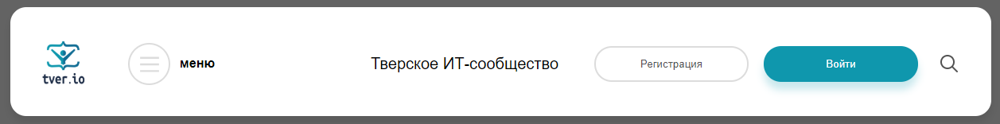
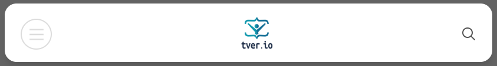
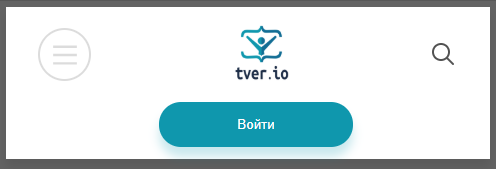

Илья Лесик
Илья Лесик
Набор хаков
Декларативность
Десктоп:
Планшет:
Телефон:
Контейнер с элементами
See the Pen 1. Header without layout by ilia (@ilialesik) on CodePen.
Добавим display: flex;
See the Pen 2. Header without layout + flex by ilia (@ilialesik) on CodePen.
Добавим flex-grow, flex-shrink
See the Pen 3. Header without layout + flex: 1 by ilia (@ilialesik) on CodePen.
Планшет
See the Pen 4. Header + tablet by ilia (@ilialesik) on CodePen.
Телефон
See the Pen 5. Header + phone by ilia (@ilialesik) on CodePen.
See the Pen 5. Header + grid by ilia (@ilialesik) on CodePen.
Планшет
See the Pen 6. Header + grid+ tablet by ilia (@ilialesik) on CodePen.
Телефон
See the Pen 7. Header + grid+ phone by ilia (@ilialesik) on CodePen.
See the Pen Fixed space between flexbox items by ilia (@ilialesik) on CodePen.
See the Pen Equal size between items (grid) by ilia (@ilialesik) on CodePen.
See the Pen Equal size between items (grid) by ilia (@ilialesik) on CodePen.
Сразу берем гриды
See the Pen 3 columns, filter, pagination with content by ilia (@ilialesik) on CodePen.
See the Pen Blog template (margin auto) by ilia (@ilialesik) on CodePen.
See the Pen Blog template (grid) by ilia (@ilialesik) on CodePen.
See the Pen Blog template+help (grid) by ilia (@ilialesik) on CodePen.
Набор хаков
Flexbox
Grid
Grid + grid-area
?
Свойства элементов
Свойства контейнера
See the Pen CSS Grid Masonry (Step 10) by Andy Barefoot (@andybarefoot) on CodePen.
See the Pen Resizable Splitter Panels by ilia (@ilialesik) on CodePen.